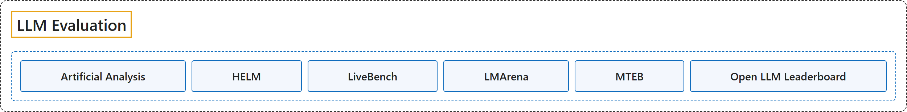

LLM Evaluation
Classification

Glossary
| Term | Definition | 中文翻译 | Source |
|---|---|---|---|
| LLM Evaluation 大模型评测 |
(No definition) | （无定义） | - |
| Artificial Analysis Artificial Analysis |
(Summary) A company that benchmarks AI models, API endpoints and systems on intelligence, quality, performance and price, measuring the performance customers actually get across providers rather than the best a piece of hardware can do. | （概述）一家为 AI 模型、API 端点和系统做基准测试的公司，测智能、质量、性能和价格，衡量的是各家服务商那里客户实际得到的性能，而不是某种硬件能达到的最好水平。 | Artificial Analysis, n.d., "Scope" |
| HELM HELM（语言模型整体评估） |
"Holistic Evaluation of Language Models (HELM) is an open source Python framework created by the Center for Research on Foundation Models (CRFM) at Stanford for holistic, reproducible and transparent evaluation of foundation models, including large language models (LLMs) and multimodal models." | 语言模型整体评估（HELM）是斯坦福基础模型研究中心（CRFM）创建的开源 Python 框架，用于对基础模型（包括大语言模型 LLM 和多模态模型）进行整体、可复现、透明的评估。 | Stanford CRFM, n.d., "Holistic Evaluation of Language Models (HELM)", para. 2 |
| LiveBench LiveBench |
"Introducing LiveBench: a benchmark for LLMs designed with test set contamination and objective evaluation in mind." | 介绍 LiveBench：一个面向 LLM 的基准，设计时考虑了测试集污染与客观评测。 | LiveBench, n.d., "Introduction", para. 1 |
| LMArena LMArena |
(Summary) A community platform, formerly Chatbot Arena and now calling itself Arena, where people compare the answers of two anonymous models to their own prompt and vote for the one they prefer; the votes build public leaderboards. | （概述）一个社区平台，前身是 Chatbot Arena，现在自称 Arena：人们比较两个匿名模型对自己提示的回答，并投票选出更喜欢的一个；这些投票构成公开排行榜。 | Arena, n.d., "How It Works" |
| MTEB MTEB（大规模文本嵌入基准） |
"MTEB is the go-to documentation for evaluating embeddings models across a variety of tasks, modalities and domains." | MTEB 是评测嵌入模型的首选文档，覆盖多种任务、模态和领域。 | MTEB, n.d., "MTEB", para. 2 |
| Open LLM Leaderboard Open LLM Leaderboard |
(Summary) A project curated by the Hugging Face team to evaluate and rank open LLMs and chatbots with reproducible scores; the documentation now describes it in the past tense. | （概述）一个由 Hugging Face 团队主持的项目，评测并排名开放的 LLM 和聊天机器人，给出可复现的分数；文档现在用过去时描述它。 | Hugging Face, n.d., "Leaderboards and Evaluations" |
Comparison
This site's own comparison, drawn from the pages above; scores and rankings are not kept here, since they change every week.
| Site | What it measures | 测什么 | Questions it can answer | 适合回答的问题 | Status (2026-11-10) | Link |
|---|---|---|---|---|---|---|
| Artificial Analysis | A weighted index of nine evaluations (knowledge work, coding, science, general), plus price, output speed and latency per API endpoint | 九项评测的加权指数（知识工作、编程、科学、常识），以及各 API 端点的价格、输出速度和延迟 | Which model gives the most capability for the money or the time? How does an open-weights model compare with closed ones on the same harness? | 哪个模型的能力最划算（按价钱或按时间）？开放权重模型和闭源模型在同一套测试下差多少？ | Active; the index is versioned (v5.0.1 when cached), so compare scores only within one version | https://artificialanalysis.ai/methodology/intelligence-benchmarking |
| HELM | Seven metrics beyond accuracy (calibration, robustness, fairness, bias, toxicity, efficiency) over standardized scenarios, plus domain leaderboards | 准确性之外的七项指标（校准、鲁棒性、公平性、偏见、毒性、效率），在统一的场景上测；另有各领域排行榜 | Does a model trade accuracy for robustness, calibration or safety? How did models compare under identical prompts? | 模型是否用鲁棒性、校准或安全性换来了准确率？在完全相同的提示下各模型比较如何？ | Maintenance mode since June 1, 2026: no new evaluations | https://crfm-helm.readthedocs.io/en/latest/ |
| LiveBench | 2.0: seven suites, five of them agentic, graded automatically; 1.0: seven categories with single answers, Instruction Following among them | 2.0：七个套件，五个是智能体任务，自动评分；1.0：七个单答案类别，含指令遵循 | How does a model do on fresh, automatically graded tasks it is unlikely to have seen? (1.0) How well does it follow verifiable format instructions? | 模型在不太可能见过、自动评分的新题上表现如何？（1.0）能否遵守可验证的格式指令？ | 2.0 updated 2026-11-09; 1.0 last release 2026-06-25 | https://livebench.ai/#/methodology |
| LMArena | Human preference from anonymous pairwise votes, turned into Bradley-Terry scores, with and without style control | 匿名两两对比中人的偏好，换算成 Bradley-Terry 分数，分有无风格控制两种 | Which model's answers do people prefer in open-ended chat? Does a lead survive style control? | 开放式对话里人们更喜欢哪个模型的回答？去掉风格因素后领先是否还在？ | Active; scores of newly released models start as preliminary | https://lmarena.ai/how-it-works |
| MTEB | Embedding models on retrieval, classification, clustering, semantic similarity and pair classification, across many tasks and languages | 嵌入模型在检索、分类、聚类、语义相似度、成对分类上的表现，覆盖大量任务与语言 | Which embedding model to use for retrieval or RAG, and in which language? | 检索或 RAG 用哪个嵌入模型，针对哪种语言？ | Active; mteb 2.0 |
https://docs.mteb.org/overview/ |
| Open LLM Leaderboard | Open models on six benchmarks (IFEval, BBH, MATH Lvl 5, GPQA, MuSR, MMLU-Pro) with one reproducible harness | 开放模型在六项基准（IFEval、BBH、MATH Lvl 5、GPQA、MuSR、MMLU-Pro）上的成绩，用同一套可复现工具 | How did an open base or fine-tuned model compare under a fixed harness, as a historical record? | 某个开放的基础模型或微调模型在固定测试工具下曾经排在哪里（作为历史记录）？ | No longer running (the documentation speaks of it in the past tense); v1 archived June 2024 | https://huggingface.co/docs/leaderboards/open_llm_leaderboard/about |
References
Arena. (n.d.). How it works. Retrieved November 10, 2026, from https://lmarena.ai/how-it-works
Artificial Analysis. (n.d.). Artificial Analysis benchmarking methodology. Retrieved November 10, 2026, from https://artificialanalysis.ai/methodology
Hugging Face. (n.d.). Leaderboards and evaluations. In Leaderboards documentation. Retrieved November 10, 2026, from https://huggingface.co/docs/leaderboards/index
LiveBench. (n.d.). LiveBench [Source code]. GitHub. Retrieved November 10, 2026, from https://github.com/LiveBench/LiveBench
MTEB. (n.d.). MTEB: Massive Text Embedding Benchmark [Documentation]. Retrieved November 10, 2026, from https://docs.mteb.org/
Stanford CRFM. (n.d.). Holistic Evaluation of Language Models (HELM) [Documentation]. Retrieved November 10, 2026, from https://crfm-helm.readthedocs.io/en/latest/